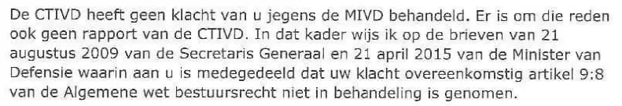

Bewijsstuk · Brief
Directeur MIVD aan Giltay over CTIVD-rapport, 24 oktober 2017
De passage
“De CTIVD heeft geen klacht van u jegens de MIVD behandeld. Er is om die reden ook geen rapport van de CTIVD. In dat kader wijs ik op de brieven van 21 augustus 2009 van de Secretaris Generaal en 21 april 2015 van de Minister van Defensie waarin aan u is medegedeeld dat uw klacht overeenkomstig artikel 9:8 van de Algemene wet bestuursrecht niet in behandeling is genomen.” Pagina 1, de tweede alinea, die de hele inhoud van de brief vormt. De brief schrijft ‘Secretaris Generaal’ zonder koppelteken, en zo staat het hier.

Waarom dit document telt
In deze brief van 24 oktober 2017 schrijft de directeur van de MIVD dat de CTIVD geen klacht van Giltay tegen de MIVD heeft behandeld en dat er “om die reden ook geen rapport van de CTIVD” is. Giltay had de minister van Algemene Zaken om het CTIVD-rapport over zijn klacht gevraagd. In plaats daarvan verwijst de dienst naar twee eerdere brieven, uit 2009 en 2015, waarin Giltay was meegedeeld dat zijn klacht niet in behandeling was genomen. De brief zegt daarmee het tegendeel van de ministeriële brief van 6 juni 2017, die zijn verzoek om eerherstel had afgewezen met een beroep op een onderzoek van diezelfde commissie. Het essay noemt dit de bevestiging dat de tweede pijler onder die weigering, een CTIVD-onderzoek, niet bestond.
De brief is ondertekend ‘voor deze’, namens de minister van Defensie, door de directeur van de MIVD, generaal-majoor O. Eichelsheim, wiens naam en rang eronder staan. Formeel is het dus een brief van de minister en spreekt het ministerie daarmee zijn eigen brief van 6 juni 2017 tegen. Het citaat in de stemmensectie noemt de ondertekenaar, omdat juist het hoofd van de dienst zelf hier vaststelt dat het CTIVD-onderzoek waarop zijn minister zich had beroepen, niet bestaat.
Herkomst
- Document
- Brief, één pagina
- Van
- Ministerie van Defensie, Militaire Inlichtingen- en Veiligheidsdienst (MIVD), afdeling Juridische Zaken, Van Alkemadelaan 786, Den Haag
- Aan
- E. Giltay
- Datum
- 24 oktober 2017, volgens het datumstempel op de brief
- Kenmerk
- DIS2017019472
- Onderwerp
- ‘Uw brief’
- Verwijzingen
- Giltays brief van 21 september 2017, waarin hij de minister van Algemene Zaken om het CTIVD-rapport over de behandeling van zijn klacht tegen de MIVD vroeg. Die brief werd ter behandeling aan de MIVD doorgezonden. Verder de brieven van 21 augustus 2009 van de secretaris-generaal en van 21 april 2015 van de minister van Defensie
- Ondertekend
- Voor de minister van Defensie, de directeur van de Militaire Inlichtingen- en Veiligheidsdienst, O. Eichelsheim, generaal-majoor. De handgeschreven handtekening is in de scan grotendeels zwartgelakt
- Contact
- MIVD/AJZ, de afdeling Juridische Zaken van de dienst. In de brief wordt geen individuele ambtenaar genoemd
- Taal
- Nederlands
- Bron
- Scan op dedoofpotgeneraal.
nl/ doc/ bijlage19.pdf - Zie ook
- Ministerie van Defensie aan Giltay, 6 juni 2017
Aangehaald in:
- het essay ‘Het verbod viel, het boek bleef overeind’ in de hoofdstukken (3) ‘Wat het boek onthult: de Srebrenica-doofpot’ en (7) ‘Nooit een inhoudelijk antwoord’
- de stemmensectie.
Document: https://
Laatst gewijzigd 13 september 2026, geraadpleegd 9 oktober 2026.

Deze pagina is een bewijsstuk bij het boek De doofpotgeneraal van Edwin Giltay en de bijbehorende website.